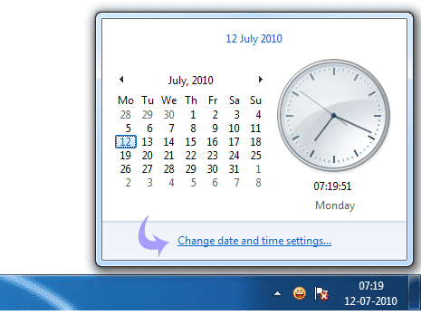

1. Introducción

Vamos a iniciar la práctica de Windows 7 haciendo un repaso de los principales elementos de un escritorio, enfocando la práctica a la solución de problemas cotidianos pero utilizando las nuevas características que nos ofrece Windows 7
Antes que nada, me gustaría que me rellenarais este pequeño cuestionario para que veamos cuál es el nivel de la clase y la expectativa que tenéis del curso.
2. El menú inicio
Empecemos a trabajar con uno de los elementos más característicos de un escritorio Windows, el Menú inicio.
- Pulsa con el ratón en el icono de Inicio de Windows.
- Utilizando el buscador, abre la aplicación WordPad.
- Utilizando ahora la navegación por secciones, abre también la aplicación Internet Explorer.
2. La barra de tareas
Vamos a probar algunas de las funcionalidades nuevas de la barra de tareas.
- Abre otro Internet explorer, de manera que tengas 2 ventanas de Internet Explorer abiertas al mismo tiempo.
- Abre otra ventana de Wordpad.
- Abre la web de Google en uno de los navegadores, y busca 2 párrafos de información al respecto de Stonehenge en Wikipedia.
- Copia los dos párrafos de información, y pégalos en una de las ventanas de WordPad que tienes abiertas. Agrega también una imagen si quieres.
- Guarda el documento con el nombre "Stonehenge.rtf" en la biblioteca de Documentos.
- ¿Se te hace cómodo encontrar la ventana de trabajo teniendo varias ventanas abiertas?
- Prueba a abrir otra ventana de wordpad pulsando con el botón derecho sobre el icono de Wordpad de la barra de tareas.
3. Utilizando las jumplists
Veamos una de las características únicamente disponibles en Windows 7, como son las Jumplists, y es que el sistema operativo se acordará de todos los documentos que hemos abierto últimamente con una aplicación, y nos permitirá volver a abrirlos fácilmente.
- Ves al menú inicio, y observa como WordPad está dentro de las aplicaciones fácilmente accesibles, ya que la hemos abierto recientemente.
- Observa también que tiene una flecha en la parte derecha del icono, que nos da acceso a la JumpList
- Vuelve a abrir tu documento utilizando la JumpList
4. El área de notificaciones.
Vamos a repasar las utilidades principales del área de notificaciones.
- Utilizando el calendario del área de notificaciones, ¿sabrías decirme en qué día de la semana cae el 6 de diciembre del 2013?
- Mirando el área de notificaciones, ¿sabrías si la conexión activa es de cable o wifi, y en qué estado está?
5. Organización de ventanas
Con las aplicaciones que tienes abiertas, arrastra un WordPad a la parte izquierda del monitor para que se cuadricule a la izquierda, y ahora un Internet Explorer a la derecha, verás que conseguirás tener rápidamente las dos ventanas visibles y repartiéndose entre ambas toda la zona de pantalla.
6. Maravillas del mundo (por Google)
A mi es que me encanta viajar y visitar otros paises, por eso si nos queda tiempo me gustaría que utilizáramos una aplicación web que presentó Google hace unos meses, World Wonder Project
- Abre un navegador y visita: http://www.google.com/worldwonders